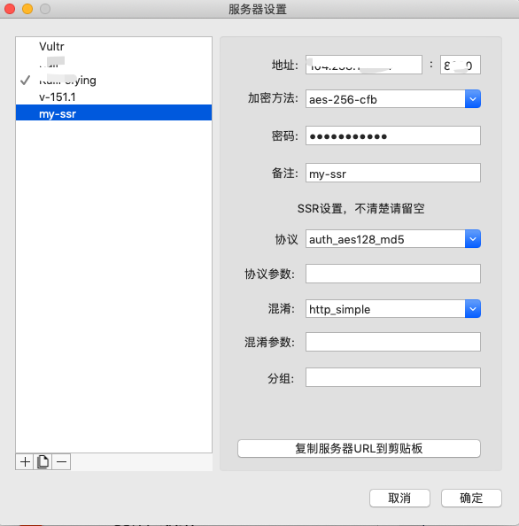
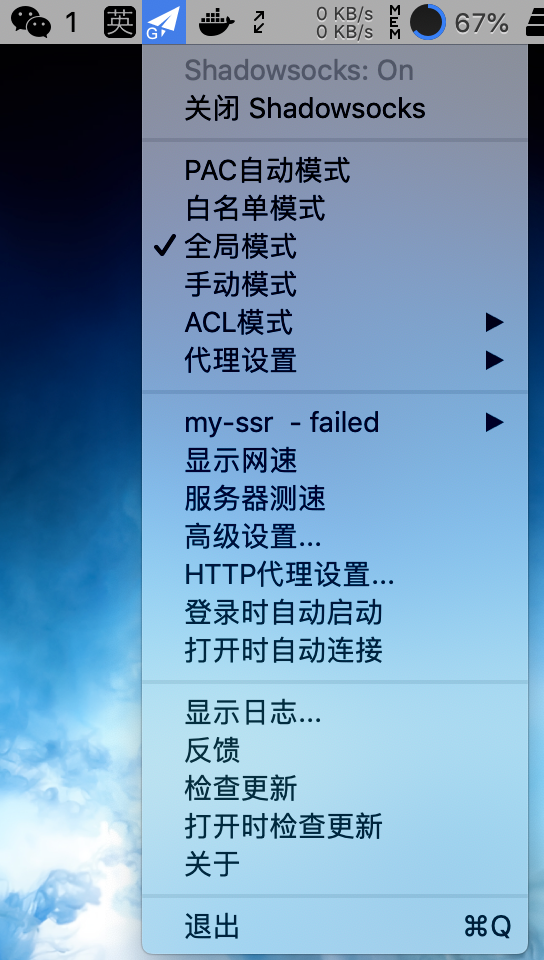

1.SR/SS简析
SSR(Shadowsocks-R)出现在SS的作者被请去喝茶之后。当时一个GitHub账号为breakwa11的人称SS不够安全，容易被GFW检测到。于是他将SS在混淆和协议方面做了改进，改进后的项目就叫shadowsocks-R。既然这样，那就别废话了，搭建一个SSR试试。
最近听说有小伙伴辛苦搭建的ss刚开始可以用，过一会就不能用了，所以写这篇文章介绍一下SS的升级版[SSR]。
SSR(Shadowsocks-R)出现在SS的作者被请去喝茶之后。当时一个GitHub账号为breakwa11的人称SS不够安全，容易被GFW检测到。于是他将SS在混淆和协议方面做了改进，改进后的项目就叫shadowsocks-R。既然这样，那就别废话了，搭建一个SSR试试。

还没有vultr vps服务器的同学建议先去看下面👇这篇,看下注册账号那里。
vultr vps 搭建 ss2.1. 下载putty：http://pan.baidu.com/s/1jI0T5Fw 解压运行putty.exe，填入你的服务器相关信息，连接到远程服务器。
2.2 安装shadowsocks-r

wget --no-check-certificate -O shadowsocks-all.sh https://raw.githubusercontent.com/teddysun/shadowsocks_install/master/shadowsocks-all.sh等待下载完成
chmod +x shadowsocks-all.sh
./shadowsocks-all.sh 2>&1 | tee shadowsocks-all.log
2.3.接下来会有几个参数需要选择，依次为：
1.提示选择哪个版本安装，我们输入2后按回车，即选择SSR安装。


请立即copy下来加以保存。记录保存好你的上述信息：Server IP、Server Port、Password、Protocol、Encryption Method。这时你的专属ss已经搭好了，开始使用吧。SSR服务端安装成功后，就可以在电脑、手机、路由器等设备上的SSR客户端上，按照以上设置的各项参数进行连接了。
安装客户端，配置代理
最后一步，将代理打开
哟哟哟，现在应该又可以happy了!